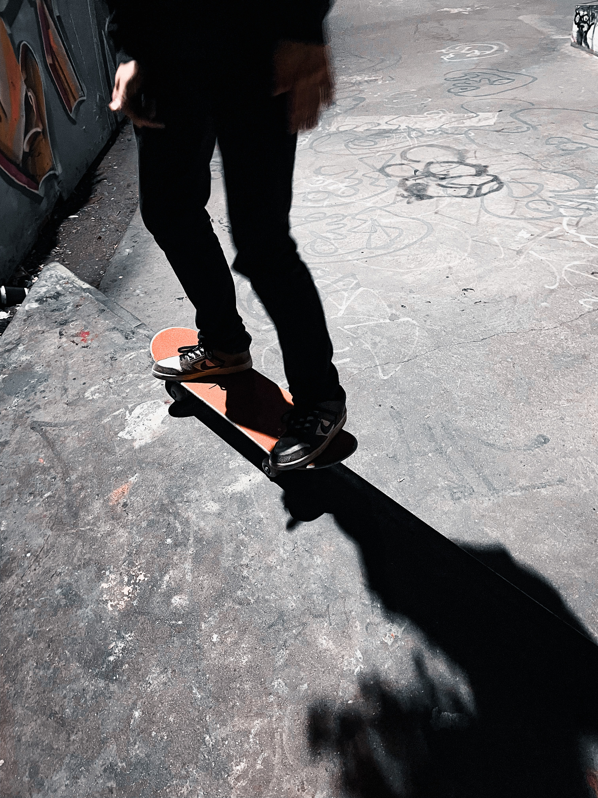

기사링크 앞서 주 원내대표는 이날 오세훈 후보가 2005년 처가의 내곡동 땅 측량 현장에 온 것을 목격했다는 인근 생태탕집 모자(母子)와 관련, “16년 전 일을 어떻게 그렇게 상세히 기억하며, 무슨 옷을 입었고 신발을 신었는지 기억하는 사람이 세상에 어디 있나”라고 했는데, 황씨가 이를 비꼰 것이다. 생태탕집 모자는 “오 후보가 검정 선글라스와 흰색 바지 차림에 흰색 페라가모 구두를 신고 식당에 왔다”고 한 바 있다. 